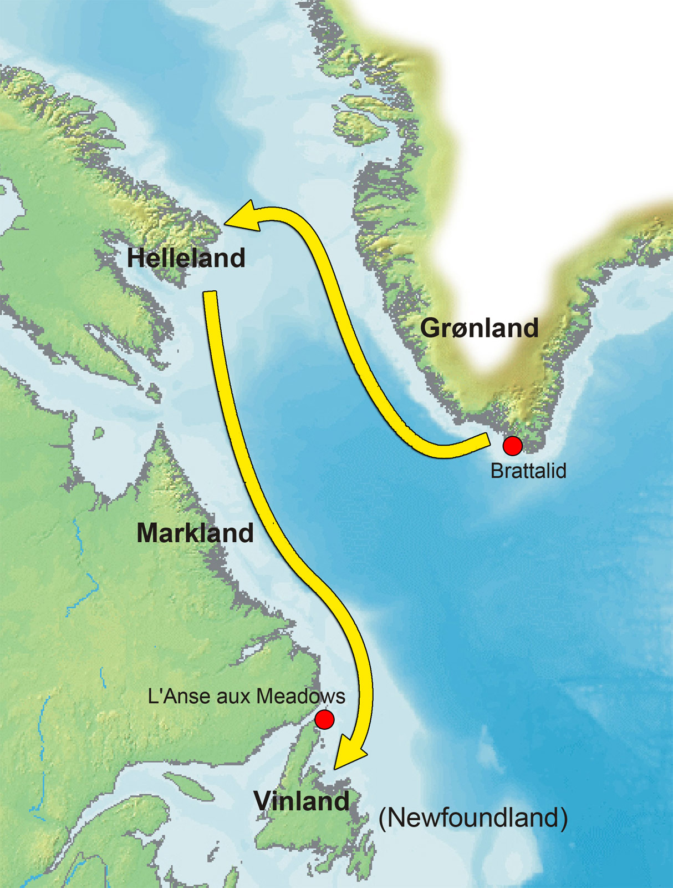

ᚦ Base histórica
Jomsvikings |
|
|---|---|
Os Jomsvikings são descritos nas sagas |
 Jomsvikings na animação | Havia um código de conduta rigoroso: lealdade entre irmãos de armas, proibição de deserção ou de demonstrar fraqueza, divisão igualitária do saque, e — segundo algumas versões — vedação à presença de mulheres e crianças dentro da fortaleza. Tradicionalmente, os Jomsvikings participavam de expedições saques, guerras, e eram temidos como mercenários — algumas vezes contratados por senhores que pagavam pelos seus serviços. A fortaleza Jomsborg e a própria existência dos Jomsvikings, no entanto, são tema de debate entre historiadores modernos. Não há evidências arqueológicas conclusivas que comprovem sua existência como descrita nas sagas. Alguns achados na região da ilha de Wolin sugerem assentamentos da Era Viking, mas não correspondem de forma clara à descrição de uma fortaleza-comunidade rigidamente militar como Jomsborg. Isso levanta a hipótese de que a história tenha sido em parte mitificada ou exagerada nas sagas. |
 Possivel base dos jomsvkings |
 Mar Báltico |
|
Vinland e os vinkings na América | |
|---|---|
|
Os vikings — grupo oriundo da Escandinávia |
 Caminho dos Nordicos até a America |
| Por volta do ano 1000 (início do século XI), exploradores vikings chegaram ao que hoje chamamos de América do Norte. O território chamado Vinland provavelmente correspondia a uma costa ao norte da América — os pesquisadores modernos apontam para o sítio arqueológico L'Anse aux Meadows, na Terra Nova (Canadá), como evidência concreta de presença nórdica lá. |
 Base viking em viland |